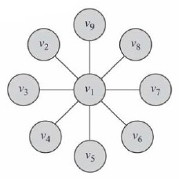
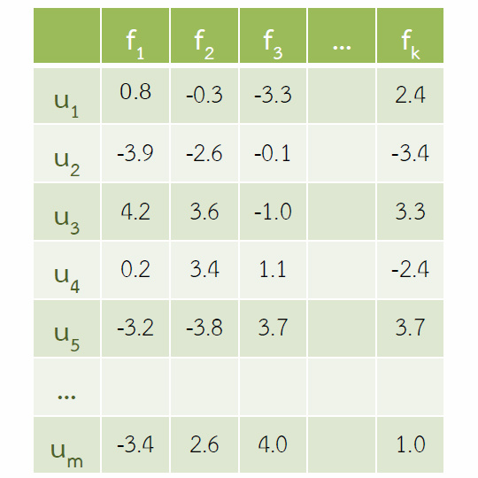

-

Investigating & Mitigating
Weaknesses of Deep NLPDocSoc Reading Group @ Imperial
25th Nov 2019, ENGLISH -

How AI is Screwed up by
(Using only) Deep LearningInternal presentation @ TDRI
2nd Jan 2019, ENGLISH -

Moreno et al.
(ESWC 2017)Reading circle @ NII
31st May 2017, ENGLISH -

Error Correction in
Knowledge GraphThai researchers' meeting @ NII
23rd Mar 2017, ENGLISH -

Future Possibilities of
Rumor Detection SystemCUTweet @ Sukosol Hotel
13th Dec 2016, THAI -

Network Measures
An IntroductionInternal presentation @ CPCU
30th Jun 2015, ENGLISH -

Collaborative Filtering
An IntroductionInternal presentation @ CPCU
17th Feb 2015, ENGLISH -
Twitter Data Analysis Tour
Internal presentation @ CPCU
22nd Jan 2015, ENGLISH